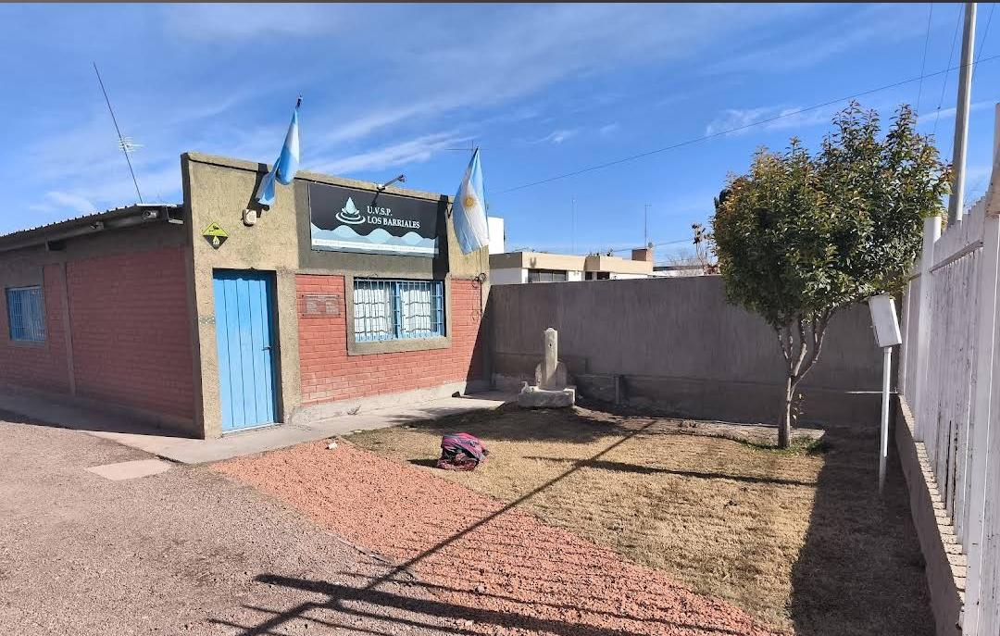

La Unión Vecinal de Servicios Públicos Los Barriales ha sido, desde hace décadas, una de las instituciones más representativas del distrito. Su historia está estrechamente ligada al desarrollo de la comunidad, ya que ha impulsado numerosas iniciativas destinadas a mejorar la calidad de vida de los vecinos y acompañar el crecimiento local. Los diarios de la década de 1970 ya daban cuenta de su protagonismo, un papel que continúa desempeñando en la actualidad.
Actualmente la Unión Vecinal continúa desempeñando un papel central en la vida comunitaria, articulando acciones con vecinos, productores, empresas e instituciones del distrito.
Frente a su edificio se conserva uno de los tres antiguos surtidores de agua que ha sido restaurado recientemente y conmemora la fecha de fundación de la unión vecinal en 1972. Uno de estos surtidores se localizaba en el este del distrito, otro en el centro (actual Plaza central de Barriales) y el otro hacia el sector oeste, aunque no se conoce con precisión el sitio exacto de su ubicación. Durante muchos años fue un punto de abastecimiento para los habitantes del distrito, que acudían con jarros y damajuanas para obtener agua destinada al consumo diario. Recuperado como parte del patrimonio local, este elemento histórico se exhibe hoy junto a la Unión Vecinal, institución desde la cual se administra actualmente el servicio de agua potable del distrito.
